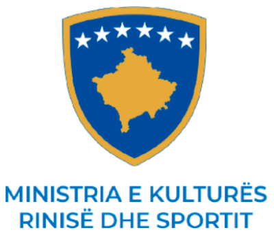
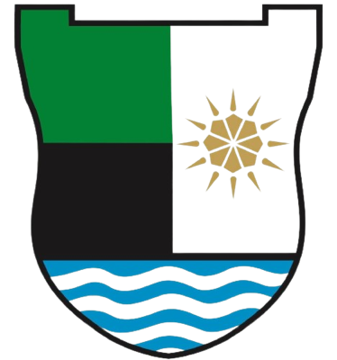
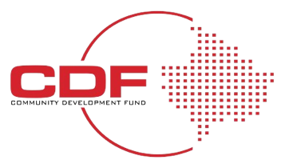
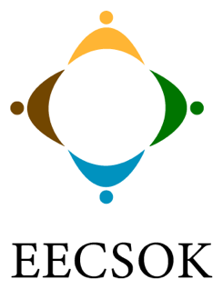
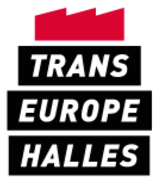
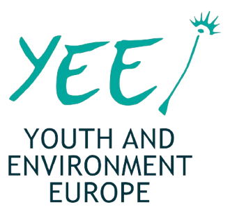
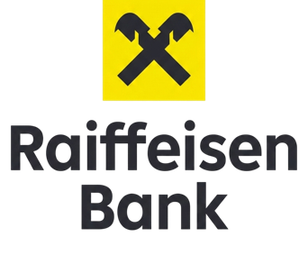

03.09.2026
Organizatë kulturore në Mitrovicë që nga 2 maji i vitit 2006. Një festival, një minierë që mund ta vizitosh dhe një shkollë për të rinjtë.


Festival multidisiplinar për mjedisin dhe kulturën. Gjashtëmbëdhjetë edicione, pesë ditë çdo vit.
Hap faqen→Trashëgimia industriale e Trepçës, e hapur për vizitorë. Tura, kujtesë dhe dyqan.
Hap faqen→
Trajnime praktike në dizajn, film, animacion dhe arkitekturë, për të rinjtë e Mitrovicës.
Hap faqen→7arte është organizatë kulturore me zyre në Mitrovicë, e cila mbështetë artistët kosovarë, si dhe promovon e zhvillon kulturë të përbashkët evropiane.









Festival multidisiplinar që përmban programe edukative dhe kulturore, me qëllim ndërgjegjësimin e shoqërisë për çështjet mjedisore dhe Objektivat e Zhvillimit të Qëndrueshëm.
Debat publik për mjedisin, qytetin dhe çka të bëhet me të dyja.
Skena kryesore, dhe arsyeja pse vjen shumica e qytetit.
Artizanë, prodhues dhe biznese vendore në qendër të qytetit.
Punëtori dhe aktivitete për fëmijë dhe familje.
Filma për ndryshim, Art Urban dhe projeksione nën qiell të hapur.


Projekt pilot i iniciuar nga OJQ 7Arte, i dedikuar ruajtjes dhe promovimit të trashëgimisë industriale të Trepçës.

Minierat e Trepçës janë kompleks i madh industrial në Kosovë, nëntë kilometra në verilindje të Mitrovicës, me histori të pasur minerare që daton që nga koha romake, bazuar në dokumentin e arkivit të Dubrovnikut të vitit 1303.
Shënimi i parë i shkruar mbi Trepçën, në arkivin e Dubrovnikut.
Lansohet projekti pilot Visit Trepça dhe mbahet tura e parë me udhërrëfyes.
Vizitorë nga Zvicra, Holanda dhe Franca, si dhe shkolla nga Mitrovica.
Brenda vetë kompleksit. Pusat, zhveshtoret e minatorëve dhe sallat e makinerive.

Peizazhi që e ndërtoi miniera. Banesat e punëtorëve, hekurudha dhe lugina përreth.

Arti, kujtesa dhe vetë minerali, bërë bashkë me artistë që kanë punuar këtu.

Libri me dëshmi, intervista dhe fotografi nga njerëzit që punuan në Trepçë.

Gota dhe bluza Visit Trepça. Të ardhurat shkojnë për programin.

Hulumtime dhe botime mbi trashëgiminë industriale të rajonit.


Trajnime të shkurtra e praktike për të rinjtë e Mitrovicës, të udhëhequra nga dizajnerë, filmbërës dhe arkitektë që punojnë në fushë.
Identitet, faqosje dhe tipografi për fillestarë, me shqyrtim portfolioje çdo seancë.
Rrëfimi dokumentar si mjet avokimi, me të rinj nga e gjithë Mitrovica.

Modelim, animacion dhe rrëfim vizual për këdo që do të punojë në 3D.
Ripërdorim, rinovim dhe çka të bëhet me ndërtesat industriale që ende qëndrojnë.
Duke parë nevojën për zhvillim kulturor dhe aktivizim të të rinjve, më 2 maj të vitit 2006, me iniciativën e artistëve vendorë u themelua organizata kulturore 7arte.

Themelohet 7arte më 2 maj, me iniciativën e artistëve vendorë të Mitrovicës.
7Arte anëtarësohet në Trans Europe Halles dhe nis punën për hapësirat industriale të Mitrovicës.
Lansohet projekti pilot Visit Trepça dhe mbahen turat e para me udhërrëfyes.
20-vjetori. Marrëveshje me Komunën për mjedisin, kapitull i ri me Trepçën dhe edicioni i 16-të i Green Fest.
Formulari është vetëm pamje në këtë koncept.

Program hulumtimi dhe avokimi për zhvillimin kulturor në Mitrovicë dhe për hapat e mëtutjeshëm.

Program i mëparshëm për artistë të rinj dhe punë krijuese në hapësirën publike.
Hapësirë krijuese për të rinjtë e Mitrovicës, me punëtori dhe takime javore.
Shtatë edicione projeksionesh nën qiell të hapur, në hapësira publike të qytetit.
Trajnim praktik në dizajn grafik me dizajnerin Yll Haxhiu, i bazuar në punë reale dhe shqyrtim portfolioje.
Trajnim nën mentorimin e Eroll Bilibanit, që mbledh të rinj dhe të reja nga Mitrovica, duke e përdorur filmin dokumentar si hapësirë për dialog dhe bashkëpunim.
7Arte Academy ofron mundësi të veçantë për të gjithë ata që duan të eksplorojnë botën e animacionit 3D, modelimit dhe tregimit vizual përmes teknologjisë.
Ripërdorimi i ndërtesave industriale dhe e ardhmja e hapësirave të braktisura në Mitrovicë, në bashkëpunim me UBT dhe Fakultetin e Arkitekturës të Universitetit të Prishtinës.
Libër me dëshmi, intervista dhe fotografi nga njerëzit që punuan në Trepçë.
Hulumtim mbi gjendjen e kulturës në Mitrovicë dhe hapat e mëtutjeshëm.
Dokumentim i hapësirave industriale të Mitrovicës dhe potencialit të tyre.

Salla dhe hapësira për ngjarje, punëtori, prezantime dhe xhirime.
Xhirim, montazh dhe fotografi për organizata, institucione dhe biznese.
Tura të organizuara në Trepçë për shkolla, delegacione dhe hulumtues.
Të rrisim rolin e diasporës në zhvillimin e qëndrueshëm të rajonit të Mitrovicës, duke sjellë investime dhe përvojat e tyre në përmirësimin e mjedisit.
Një dhuratë e njëhershme ose mbështetje e rregullt mujore për programet tona.
Paketat e sponsorizimit për Green Fest dhe Visit Trepça, me dukshmëri në qytet.
Festivali, turat dhe akademia mbahen çdo vit edhe nga dhjetëra vullnetarë.